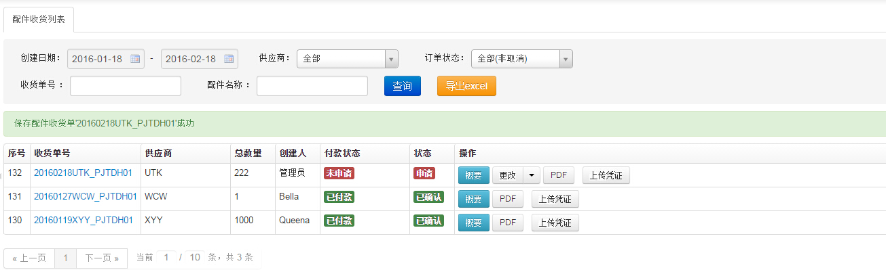
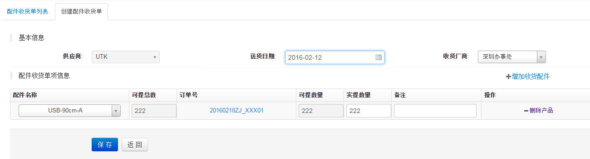
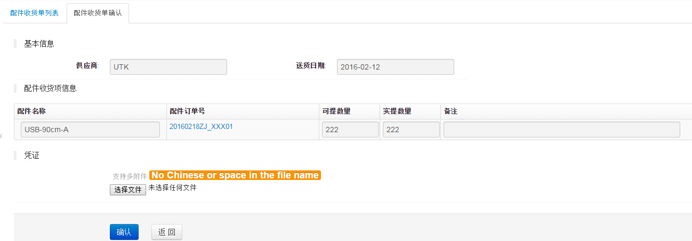

配件收货管理
1、配件收货列表页面,如下图

- 可对配件收货进行编辑、取消、确认等操作
- 如果一个配件收货里有多个产品会显示在多行里，点击“概要”后会显示该产品所有平台及数量
- 选中序号前的选择框，点击“计算勾选货品装箱体积和重量“按钮，可以对选中产品进行重量体积试算
- 提单在没有付款/预付款时可以取消，在没确认没付款时可以编辑
2、配件收货新建页面,如下图

- 从“配件订单”list页选择要收货的配件进入收货页面，可以对多配件的多个订单进行收货操作，但必须是同一个供应商同货币类型
- 收货数量必须为装箱数的整数倍
- 点击保存后配件收货为“新建”状态，收货的数量对应的订单“收货待确认”数量增加
3、配件收货确认页面,如下图

- 这里要选择正确的sku与产品进行匹配，默认选中的是绑定的，这里很重要一定要选择正确的sku！
- 确认收货后不能对收货数据进行修改
- 相应的采购订单里“收货待确认”数量移动到“已收货”数量里